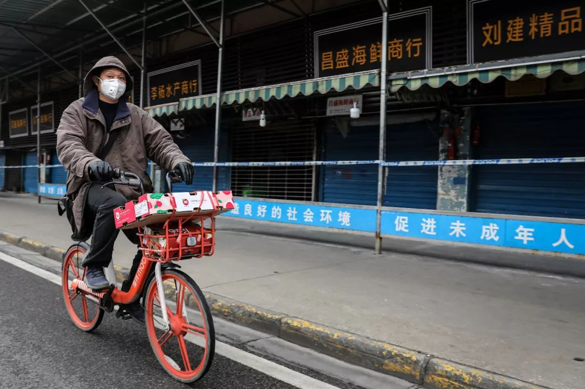
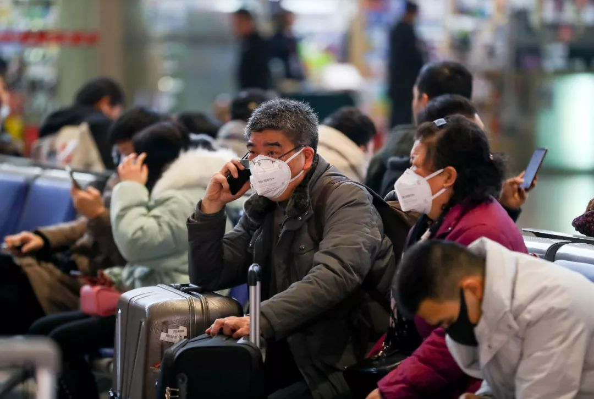

暴风眼中的武汉
原文链接 备份链接 发热门诊排起长龙的就诊队伍似乎在宣告，这座城市正面临一次巨大的挑战。 全文4742字，阅读约需9分钟 ▲湖北各地出现口罩防护服等防疫物资短缺 拟请求国家支援。新京报我们视频出品（ID：wevideo） 距离除夕还有3 …

1月20日官方公布的感染武汉新型冠状病毒患者激增之前，武汉街头看起来和平时没多少不同。从1月20日开始，戴口罩的人突然多了起来。但其实这场病毒的袭击从大约一个月前就开始了，直到今天才引起更大范围的注意。
记者 | 王珊 张从志 吴琪
华南海鲜市场：移动的病人
▲▲▲
碰到华南海鲜市场的商贩黄昌，对我们来说是个意外。市场早已于2020年1月1日关闭，昨天距离市场关闭已经三周了，傍晚时我们抱着不大的希望，想去华南海鲜市场了解更多情况。黄昌正从他已被关闭的摊位走出来，店里存了不少货品，他不放心，所以过来看看。56岁的他戴着一个一次性的口罩，整个人看起来很是苍老，精神状态也不好。他淡定地告诉我们，他就是武汉新型肺炎患者，他老婆李桂芳也是，然后邀请我们去他家聊聊。

武汉华南海鲜市场
黄昌夫妇住的小区就在华南海鲜市场东区背面，几乎是一墙之隔，步行回家不过四五分钟。这是一个上了年头的老小区，小区狭窄的路旁堆满了各种货物。他告诉我们，楼上楼下住了不少在华南海鲜市场做生意的租户，大家平时生意忙，虽然面熟得紧，但私下没什么来往，他叫不上名字。据他了解，光那一栋楼里就有好几人疑似感染。
病人不是该隔离在医院吗？为什么黄昌和老伴仍然在家呢，而且行动也并没有受限制？黄昌告诉我们，他1月20日刚刚从武汉市第十一医院（即武汉市红十字会医院，是一家二级医院）出院，出院记录上写的入院诊断是：重型肺炎（不明原因），出院诊断为：病毒性肺炎。
黄昌被送去武汉市红十字会医院后没几天，他的爱人李桂芳也出现了类似症状：浑身没劲，发热、同时伴随轻微咳嗽，没有食欲。她一向身体很好，那两天却发现爬楼梯回家都做不到了。1月11日她也去了武汉市红十字会医院。她告诉我们，经过检查，医生告诉她已经被感染，不过情况轻微，不需要隔离，只要每天来打吊瓶，9天一个疗程。21日下午见到她时，李桂芳刚从医院打完针回来，她说接下来几天还要继续去医院。

医务人员身着防护服接诊（中新社供图）
病人在家和医院之间自由行走，不就是个移动的传染源吗？夫妻俩对这点没多少概念，不过李桂芳告诉我们，黄昌病情严重时，他们因为担心不被收治也说了谎。黄昌告诉本刊，元旦期间，华南海鲜市场封市后，商户都做了登记，后来回访的时候，他并没有把自己的症状告诉回访人员，也没有说自己在打针吃药。等到撑不住了，自行前往武汉红十字医院，黄昌开始也没有告诉医生自己就在华南海鲜市场工作，只说在附近住，给了租房的地址。“我想，那天如果说我是在华南海鲜市场工作，他们肯定不会收我。”黄昌的女儿是护士，好多同学都在医院工作，他们后来从女儿那里听说，好多医院都不收海鲜市场的病人。“我蛮幸运的，去医院的时候我没有说实话。”
早期症状：浑身无力
▲▲▲
在黄昌的印象里，华南海鲜市场最先出现症状的，是他旁边卖鱼虾的老板娘，50多岁。那还是2019年12月中旬，她先是浑身没劲，紧接着发高烧。她觉得只是小感冒，挨了几天后却没好，随后被送进了医院。黄昌好奇，问了下对方老公，对方说，“蛮严重，肺部都感染了。”此时，没有人知道她已经感染了新型冠状病毒。
黄昌和得病的老板娘都是华南海鲜市场的老店家了。从市场建设以来，黄昌就在这里卖海鲜水产。这家位于武汉市江汉区发展大道207号的市场，被新华路劈成东西两区，与汉口火车站和客运中心步行只要几分钟，附近商场、写字楼林立。作为此次疫情的发源地，市场已于1月1日关闭，除了巡逻人员很少能够看到商贩，曾经的热闹，被萧瑟和死寂所替代。年底本来是市场最忙的时候，黄昌也已经囤了几千斤货物。整个华南海鲜市场原本都是一副备战春节的喜气洋洋状态。黄昌所在的西区500多个档口都在忙着买卖。附近区县的餐馆、市场很多来这里进货。

黄昌说，在卖鱼虾老板娘住院后，紧接着出现问题的是对面档口卖干果的一对夫妻。病情跟前者类似，浑身无力。黄昌眼瞅着对方每天去打针，回来抱着个大缸子喝了好几天水，也没好转。直到有一天，对方的儿子在卖货，他才知道，人已经送到了武汉协和医院。后来才知道，对方肺部严重感染，发高烧一度到了41度。
元旦过后，黄昌身体就开始感到不适，浑身没劲，从楼下爬上他们住的四楼越来越吃力，后来便开始发热、咳嗽。在社区门诊打了三天吊水，他记得有感冒常用的药物，如头孢，但症状并未见好，反而继续加重，1月6下午，黄昌才被家里人送进了武汉市红十字会医院。
即使如此，几乎没有人知道，让他们生病的病毒后来被叫做“新型冠状病毒”的病毒。后来关于病毒的溯源都指向了华南海鲜市场里售卖的野生动物。网上流传出的一张图片显示，一家名为“大众畜牧”的摊位售卖的野味种类多达42种，包括竹鼠、狗狸獾、猪狸獾、果子狸、狐狸、树熊、孔雀、大雁等，“均可活杀现宰，速冻冰鲜，送货上门”。

网传华南海鲜市场野味价目图
昨天，在华南海鲜市场东区，我们看到了一家同名的店铺，店面朝着新华路，十分显眼，不过目前已经拉上了卷帘门。在市场里做了十几年生意的黄昌夫妇告诉本刊，华南海鲜市场里卖野味的摊位并不算多，主要还是以海鲜鱼虾为主，但他们知道确实有摊位在售卖野兔和蛇之类的野味。
根据2020年1月21日中国科学院上海巴斯德研究所等机构发布的论文研究显示，武汉新型冠状病毒基因组与2002年“非典”SARS冠状病毒、“中东呼吸综合征”MERS冠状病毒平均分别有~70%和~40%的序列相似性。研究成果预测了武汉冠状病毒有很强的对人感染能力。
邻居和自己的相继发病，并没引起他的注意。黄昌觉得，冬天流感高发，大家只不过是得了严重的感冒而已。到了2019年12月30日，一份疑似武汉卫健委发布的《关于做好不明原因肺炎救治工作的紧急通知》在网上流传，其中提及武汉多家医疗机构陆续出现多例不明原因肺炎病例，并与华南海鲜城有关联。
12月31日这天市场的气氛开始紧张，一早就有很多身着防护服、背着喷雾器的医务人员出现在市场里消毒。1月1日，黄昌等人就接到了市场当天要关闭的信息。讽刺的是，这天武汉市公安局发布了一条通报，声称日前因为一些关于“武汉病毒性肺炎”的不实信息在网络流传，公安部门对此进行了调查，他们依法处理了8人，原因是散布不实信息。
20天后，在针对“新型冠状病毒感染的肺炎疫情”有关防控情况记者问答会上，国家卫健委高级别专家组组长钟南山院士证实了武汉肺炎的“人传人”现象，且有医护感染。**而在此之前，2019年12月31日，武汉市卫健委的通报声称病毒性肺炎“未发现人传人现象”。
**
2020年1月15日，武汉卫健委发布新型冠状病例感染的肺炎疫情问答表示，调查结果表明，病毒性肺炎尚未发现明确的人传人证据，不能排除有限人传人的可能，但持续人传人的风险较低。
医院艰难的防疫战
▲▲▲
“今天有个年纪很大的患者，被120送来后躺在担架上，很久都没有人搭理他。他年纪很大了，躺在床上眼睛一直没有睁开。”李桂芳说，她这一周多往返医院，看到的“基本是年纪比较大的人，年轻的看着也有40多岁，很少能看到年轻人。”病人太多，医院添置了很多挂吊瓶的支撑架，将整个急诊挤得满满当当的。
从外界来看，就是在黄昌出院的1月20日左右，武汉的新型肺炎病例数字突然多了起来。但是对于一直身处武汉医疗一线的部分医生来说，早就意识到情况的严重性。一位综合医院的骨干医生张晓文（化名）告诉本刊说，她所在的医院，十天前床位就紧张了。从2019年12月中下旬开始，来医院的不明原因肺炎病人增多，但是即使后来新型冠状病毒在逐步查明，外界又表明这种病毒的检测试剂盒供应充足，医院仍然不容易得到检测盒。曾经通过社交媒体等渠道，对这轮肺炎疫情表示担心的医生，被约谈。“我们作为实力很强的综合医院，有隔离病房，但隔离病房哪里跟得上这一轮病人的增长？”

医务人员正在转移患者
黄昌和李桂芳分别于1月6号、1月11日开始到医院看病，见到医生护士戴着口罩，并无其他防护。李桂芳说，大约看病两天后，她所去医院的医护人员穿上了防护服、戴上了护目镜，裹得严严实实的。医院发热门诊和急诊科的人也越来越多。1月11日那几天她去打针，从挂号到输液完成只需要三个小时，现在光挂号就要排很久，算下来一天得7个小时耗在医院里。
作为2019年12月22日就“中招”的小吴，年仅23岁。小吴是黄陂人，在汉口火车站附近做销售，那里离他租的地方很近，他每天骑自行车上下班，以前也从未去过海鲜市场。小吴记得那天下了点小雨，他没带雨衣雨伞，就绕了几段路，路过了华南海鲜市场北边的华南水果批发市场，进去逛了一下就出来了。两天后，小吴感觉身体不舒服，开始反复低烧，出汗不止，他觉得是“路上可能淋了点雨，着了凉”。

一位戴着口罩的市民骑车经过华南海鲜市场。
几天后就诊时，小吴对正在发酵的肺炎一无所知，在医院做血常规和肝功能筛查，发现有两项异常，医生建议他去大医院。在家又待了一个周末后，2020年1月1日，小吴到了武汉协和医院，情况非常严重后，他被转到武汉金银潭医院（即武汉市医疗救治中心）。在金银潭医院，小吴和两个患者待在一起。“他们的情况比我轻一些。一个是在华南海鲜市场里做搬运工，老板卖生猪肉、排骨，另一个是50多岁的老阿姨，家住在市场附近。不过她后来被证明是感冒，5天左右就出院了，之后很快又转进了一个人。”
小吴告诉本刊，因为病人增多，1月10日，他所在的金银潭医院将病人分为两类，症状轻的在一起，症状严重的则在一个房间。小吴与另外三名患者住在一起。“我那时身体状况已经比较好，他们三个人基本全天在吸氧状态，情况很差。”
在武汉某三甲医院的主任医生费青（化名）说，如果在十多天前就面对真实情况，对这轮疫情严阵以待，情况会好得多。现在他所在的医院很难接受新来的病人了，因为现有病人已经使得医院在超负荷运转了，医护人员被感染的人数并不少。

1月21日，武汉火车站候车大厅，戴着口罩的旅客在候车。（中新社供图）
2020年1月21日，武汉市新型冠状病毒感染的肺炎疫情防控指挥部在当天召开的新闻发布会上陈述了床位紧张的问题。武汉市卫健委副主任彭厚鹏在会上表示，目前武汉安排了三家定点医院800张床位用于收治病人，还将在最短时间内腾出1200张床位，所有确诊病人均可享受免费救治。
1月22日，国务院新闻办公室上午举行新闻发布会，国家卫生健康委员会副主任李斌表示，截至21日24时，国家卫健委收到国内13个省区市累计报告新型冠状病毒感染病例440例，报告死亡病例累计9例。新增3例死亡病例，全部为湖北病例。
（黄昌、小吴、李桂芳均为化名）
大家都在看


⊙文章版权归《三联生活周刊》所有，欢迎转发到朋友圈，转载请联系后台。
点击下图，一键下单「*年里美味***」
**
买它！

▼ 点击阅读原文，进入周刊书店，购买更多好书。
原文链接 备份链接 发热门诊排起长龙的就诊队伍似乎在宣告，这座城市正面临一次巨大的挑战。 全文4742字，阅读约需9分钟 ▲湖北各地出现口罩防护服等防疫物资短缺 拟请求国家支援。新京报我们视频出品（ID：wevideo） 距离除夕还有3 …
原文链接 备份链接 第一财经 2019-12-31 13:39:50 听新闻 [* 一财区域 ](/author/100000392.html) 华南海鲜市场是武汉最大的海鲜批发市场。据多方接受采访的人士称，该市场昨晚进行了例行消 …
原文链接 备份链接 ********** *****网传“大众畜牧野味”的确存在，该商铺位于华南海鲜批发市场东区北侧，招牌名为“大众畜牧业味”。受市场整体休业影响，商铺已闭店。新京报记者多次拨打商铺电话，均无人接听。***** ▲1月21 …
原文链接 备份链接 [* 陈益刊 ](/author/85.html) 一位海鲜市场经营甲鱼的辛先生告诉记者，也是从新闻上知道市场出现肺炎病人，所以也有些担心，戴了口罩。一直在正常营业，没有关停过。 武汉华南海鲜市场 …
原文链接 备份链接 这是较早一批感染者之一，发病住院时还没有“新型冠状病毒”的称谓。经历17天隔离治疗，如今痊愈回家 2020年1月11日，工作人员在武汉华南海鲜批发市场西区（主要经营海鲜、水产等）进行检查。图/法新 文 |《财经》记者 …